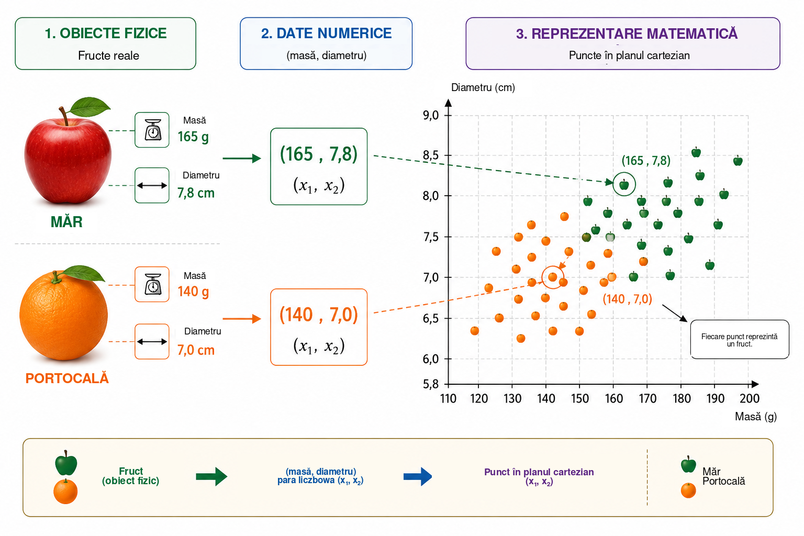
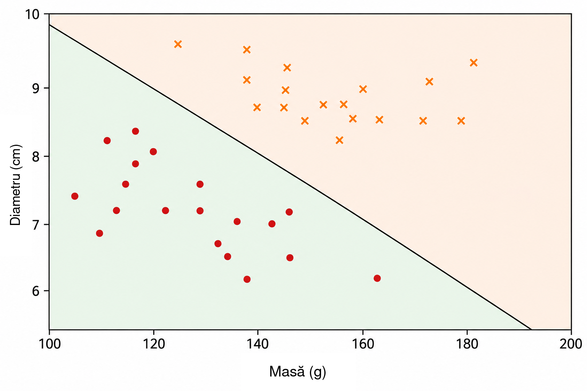
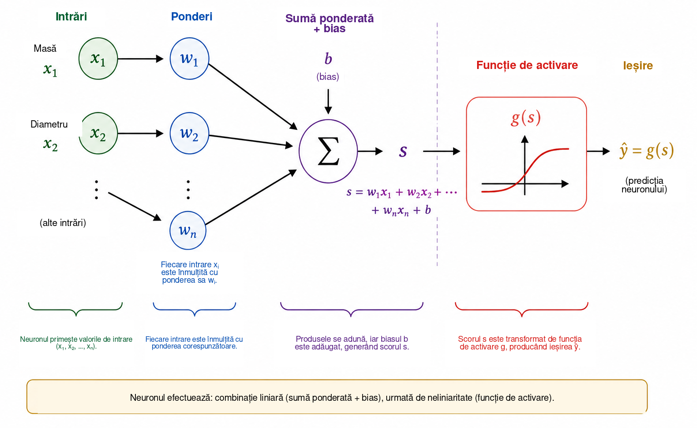
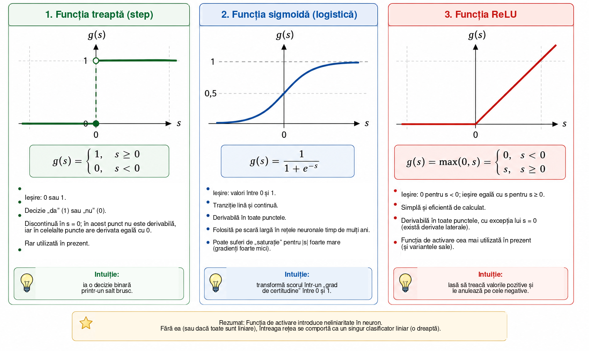
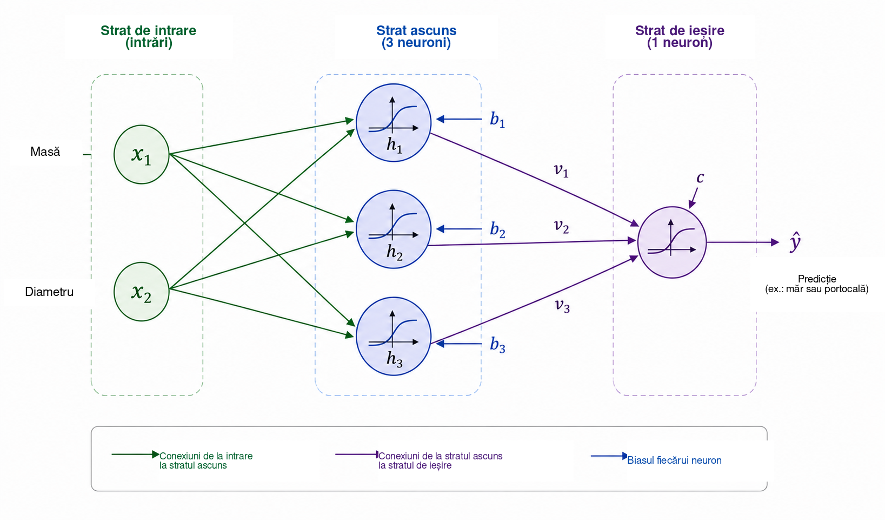
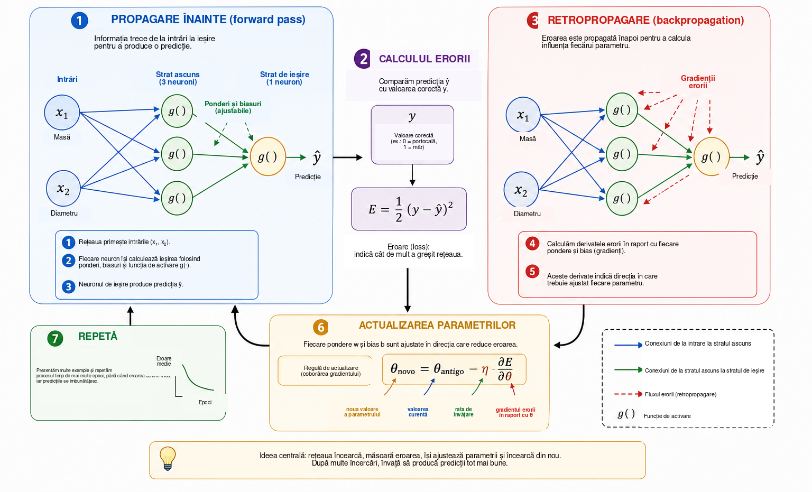
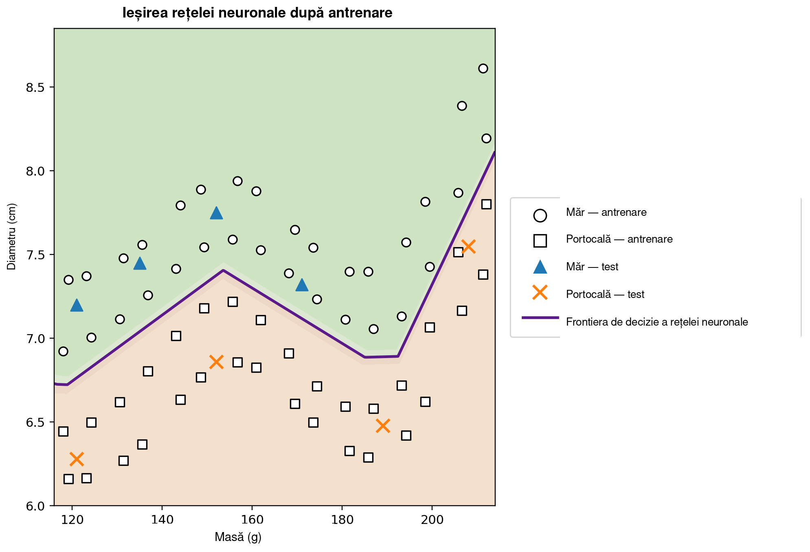

Când poate învăța un calculator?
În viața de zi cu zi luăm decizii de clasificare aproape fără să ne dăm seama. Privind un fruct, îl recunoaștem rapid ca fiind un măr sau o portocală; când primim un mesaj pe telefon, distingem o conversație legitimă de publicitatea nedorită; într-o analiză medicală, mai multe măsurători pot fi combinate pentru a sprijini o decizie; iar în instituțiile financiare sunt evaluate mai multe informații înainte de acordarea unui credit. În toate aceste exemple, mai multe caracteristici sunt analizate împreună pentru a produce un răspuns.
În multe programe de calculator tradiționale, regulile care produc acest răspuns sunt scrise explicit de programator. Această abordare funcționează bine atunci când regulile sunt cunoscute și pot fi formulate clar. Ea devine mai puțin eficientă atunci când datele sunt foarte variabile sau când este dificil să formulăm în prealabil toate condițiile necesare pentru o decizie bună. De aici apare o întrebare firească:
Putem construi un program care să învețe o regulă de decizie din exemple, în loc să primească regula dinainte?
Aceasta este una dintre ideile centrale ale învățării automate (machine learning), domeniu al inteligenței artificiale care studiază metode de ajustare a modelelor pe baza datelor . Într-o problemă de învățare supervizată, algoritmul primește exemple împreună cu răspunsurile lor corecte, iar noi căutăm un model care să poată produce predicții utile și pentru cazuri care nu au fost folosite în timpul antrenării. Dintre numeroasele modele dezvoltate în acest scop, rețelele neuronale artificiale au devenit importante în aplicații precum recunoașterea imaginilor, prelucrarea limbajului, analiza semnalelor și predicția seriilor temporale .
Utilizarea rețelelor neuronale ca punte între matematică, calcul și educația școlară a fost deja discutată în Professor de Matemática Online de Batista și Martins , care prezintă o activitate ce implică formarea profesorilor, Python și recunoașterea cifrelor. Articolul de față urmează o cale complementară. Obiectivul nostru principal este să dezvăluim matematica din interiorul unei rețele neuronale mici, pornind de la geometria analitică și ajungând, pas cu pas, la calculul gradientului și la o implementare manuală a retropropagării.
În pofida sofisticării aplicațiilor moderne, nucleul matematic al unei rețele neuronale poate fi introdus folosind idei relativ familiare. La nivel de bază, o rețea neuronală este o compunere de funcții ale căror parametri sunt ajustați pe baza datelor. Pornim de la o problemă geometrică simplă, reinterpretăm o dreaptă de separare ca neuron artificial, conectăm mai mulți neuroni, studiem rolul funcțiilor de activare și arătăm cum derivatele pot fi utilizate pentru ajustarea automată a parametrilor rețelei. Apoi implementăm în Python un exemplu complet de mici dimensiuni, păstrând o corespondență directă între ecuații și cod.
Reprezentarea matematică a problemei
Pentru a înțelege cum funcționează o rețea neuronală, începem cu o problemă deliberat simplă: distingerea merelor de portocale. Un fruct are numeroase caracteristici care ar putea fi utile pentru această sarcină, precum culoarea, masa, diametrul, textura și aroma. Totuși, un model matematic inițial nu trebuie să includă toată această complexitate. Vom utiliza doar două mărimi ușor de măsurat: masa, în grame, și diametrul, în centimetri.
Fiecare fruct va fi reprezentat, așadar, printr-o pereche ordonată \[(x_1,x_2),\] unde \[x_1=\text{masa} \qquad\text{și}\qquad x_2=\text{diametrul}.\]
Astfel, perechea \((155,\;7.2)\) reprezintă un fruct cu masa de \(155\) g și diametrul de \(7.2\) cm. Înlocuind obiectul fizic prin două măsurători numerice, asociem fiecărui fruct un punct în planul cartezian: prima coordonată reprezintă masa, iar a doua diametrul. Figura 1 ilustrează această reprezentare pentru un set ipotetic de mere și portocale.

Această transformare schimbă natura aparentă a problemei. În loc să întrebăm direct cum recunoaștem un măr sau o portocală, putem formula o întrebare geometrică: cum pot fi separate în plan punctele care aparțin celor două clase? Această schimbare de perspectivă este fundamentală în învățarea automată. Imaginile, textele, sunetele și semnalele experimentale trebuie convertite în reprezentări numerice înainte de a putea fi procesate de un algoritm. În exemplul nostru, fiecare obiect are doar două coordonate; în aplicații reale, o reprezentare poate conține sute, mii sau chiar milioane de componente. Principiul rămâne același: fiecărui exemplu îi este asociată o colecție de numere, iar modelul caută o regulă care transformă această reprezentare în răspunsul dorit.
Pornim de la cea mai simplă regulă geometrică disponibilă și întrebăm dacă o singură dreaptă poate separa suficient de bine punctele corespunzătoare merelor de cele corespunzătoare portocalelor.
O dreaptă ca clasificator
După ce fiecare fruct a fost reprezentat printr-un punct în planul cartezian, clasificarea devine o problemă geometrică: poate o dreaptă să separe merele de portocale? Această întrebare surprinde ideea de bază a unei familii importante de metode de învățare automată numite clasificatoare liniare.
Considerăm o dreaptă care traversează norul de date, așa cum este ilustrat în Figura 2. Dreapta împarte planul în două semiplane. Dacă majoritatea punctelor corespunzătoare merelor se află de o parte, iar majoritatea celor corespunzătoare portocalelor de cealaltă parte, poziția unui fruct nou față de dreaptă poate fi utilizată ca regulă de clasificare. După măsurarea masei și diametrului, reprezentăm fructul printr-un punct și determinăm de care parte a dreptei se află acesta.

În planul cartezian \((x_1,x_2)\), o dreaptă poate fi descrisă de ecuația \[w_1x_1+w_2x_2+b=0, \qquad (w_1,w_2)\neq(0,0).\]
Vectorul \((w_1,w_2)\) este perpendicular pe dreaptă și îi determină, prin urmare, orientarea, în timp ce parametrul \(b\) contribuie la poziția ei. Această reprezentare are o mică redundanță: înmulțirea simultană a lui \(w_1\), \(w_2\) și \(b\) cu aceeași constantă nenulă produce exact aceeași dreaptă. Prin urmare, parametrii care descriu frontiera nu sunt unici. Interpretarea lor numerică depinde și de scara variabilelor. Deoarece masa este măsurată în grame, iar diametrul în centimetri, valorile numerice ale lui \(w_1\) și \(w_2\) nu trebuie comparate fără a ține seama de unitățile diferite.
Ecuația dreptei oferă ea însăși o modalitate simplă de a determina de care parte a frontierei se află un punct. Definim scorul \[s(x_1,x_2)=w_1x_1+w_2x_2+b.\]
Dacă \(s(x_1,x_2)=0\), punctul se află pe dreaptă. Dacă \(s(x_1,x_2)>0\), el se află într-un semiplan; dacă \(s(x_1,x_2)<0\), se află în celălalt. Dacă stabilim că scorurile pozitive corespund merelor, iar cele negative portocalelor, regula devine \[\begin{cases} s(x_1,x_2)\geq 0 & \Longrightarrow \text{măr},\\ s(x_1,x_2)<0 & \Longrightarrow \text{portocală}. \end{cases}\]
De exemplu, considerăm frontiera definită prin \[w_1=\frac{1}{10}, \qquad w_2=2, \qquad b=-30.\] Pentru un fruct cu masa de \(160\) g și diametrul de \(7.8\) cm, \[\begin{aligned} s &=\frac{1}{10}\times160+2\times7.8-30\\ &=16+15.6-30\\ &=1.6. \end{aligned}\] Deoarece scorul este pozitiv, punctul se află în semiplanul pe care l-am asociat merelor. Acest clasificator ar eticheta, așadar, fructul drept măr.
Nu orice alegere a lui \(w_1\), \(w_2\) și \(b\) produce o clasificare bună. Unele drepte separă slab cele două grupuri, în timp ce altele produc mai puține erori. Problema învățării constă tocmai în folosirea unor exemple etichetate anterior pentru a determina valori ale parametrilor care reduc o măsură a erorii modelului. În loc să programăm direct poziția dreptei, dorim ca algoritmul să-i ajusteze coeficienții pe baza datelor.
O singură dreaptă poate funcționa bine atunci când clasele sunt aproximativ separabile liniar. Seturi de date mai complicate pot necesita o frontieră neliniară. Înainte de a aborda această limitare, reinterpretăm clasificatorul tocmai construit ca o unitate de calcul elementară: un neuron artificial.
Neuronul artificial
În secțiunea precedentă, expresia \[s=w_1x_1+w_2x_2+b\] a fost utilizată pentru a determina de care parte a unei drepte se află un fruct. Aceeași expresie poate fi privită ca prima etapă a calculului efectuat de un neuron artificial. Un neuron primește intrări numerice, le combină folosind ponderi și un bias, apoi aplică o funcție matematică pentru a obține ieșirea.
În exemplul nostru, intrările sunt masa \(x_1\) și diametrul \(x_2\). Fiecare intrare este înmulțită cu un parametru numit pondere; produsele sunt adunate împreună cu un termen constant \(b\), numit bias. Figura 3 prezintă schematic acest calcul.

Ponderile determină modul în care schimbările intrărilor influențează scorul. Dacă \(x_2\) și toate celelalte mărimi sunt menținute fixe, o variație \(\Delta x_1\) modifică \(s\) cu \(w_1\Delta x_1\). În mod similar, o variație \(\Delta x_2\) modifică scorul cu \(w_2\Delta x_2\). Și semnul contează: o pondere pozitivă face ca o creștere a intrării să mărească scorul, în timp ce o pondere negativă produce efectul opus. Această interpretare trebuie folosită cu atenție atunci când variabilele au unități și scări diferite. Din acest motiv, implementările practice normalizează sau standardizează adesea datele de intrare înainte de antrenare.
Biasul \(b\) este termenul constant al transformării afine. Geometric, el permite deplasarea frontierei de decizie. Dacă \(b=0\), ecuația \[w_1x_1+w_2x_2=0\] forțează dreapta să treacă prin origine. Cu un bias, frontiera poate fi mutată în alte poziții. Echivalent, atunci când \(x_1=x_2=0\), scorul este pur și simplu \(s=b\).
Scorul nu trebuie să fie ieșirea finală a neuronului. În general, asupra lui se aplică o funcție de activare \(g\): \[\widehat{y}=g(s)=g\left(w_1x_1+w_2x_2+b\right).\] Calculul are deci două etape, \[\begin{aligned} s &= w_1x_1+w_2x_2+b,\\[4pt] \widehat{y} &= g(s). \end{aligned}\]
Folosind valorile parametrilor din secțiunea precedentă obținem \(s=1.6\). Dacă alegem funcția treaptă \[g(s)= \begin{cases} 1, & s\geq0,\\ 0, & s<0, \end{cases}\] atunci \(\widehat{y}=g(1.6)=1\). Conform convenției noastre, fructul este clasificat drept măr. Cu această activare, decizia se schimbă atunci când \(s\) trece prin zero, astfel încât frontiera dintre clase este exact \[w_1x_1+w_2x_2+b=0.\]
Un singur neuron este, prin urmare, un obiect matematic simplu cu parametri ajustabili. Importanța lui reală apare atunci când conectăm multe astfel de unități. Înainte de a construi o rețea, trebuie însă să înțelegem de ce funcția de activare este esențială.
De ce avem nevoie de o funcție de activare?
Un neuron calculează mai întâi un scor printr-o transformare afină și abia apoi aplică o funcție de activare. Această a doua etapă este esențială dacă dorim ca o rețea neuronală să poată reprezenta relații complicate. Pentru a vedea de ce, imaginăm o rețea în care nu se folosesc funcții de activare. Fiecare unitate ar avea atunci forma \[y=w_1x_1+w_2x_2+b.\]
Pentru o ilustrare unidimensională, să presupunem că o primă unitate produce \[h=ax+b\] iar o a doua calculează \[y=ch+d.\] Prin substituție obținem \[y=c(ax+b)+d=acx+(cb+d),\] care este tot o funcție afină de \(x\). Același lucru este valabil în mai multe dimensiuni: o compunere de transformări afine este tot o transformare afină. Prin urmare, adăugarea multor straturi fără o operație neliniară nu face rețeaua fundamental mai expresivă; întreaga compunere ar putea fi înlocuită de o singură transformare afină.
O funcție de activare elimină această limitare. După calcularea scorului \(s\), neuronul aplică o transformare de regulă neliniară \[h=g(s).\] Atunci când mai multe astfel de unități sunt conectate, compunerea rezultată nu mai poate fi redusă la o singură transformare afină. Astfel, rețeaua poate construi frontiere de decizie mai complicate.
Cea mai simplă activare este funcția treaptă, \[g(s)= \begin{cases} 1, & s\geq0,\\ 0, & s<0. \end{cases}\] Ea produce o decizie binară și este foarte utilă pentru înțelegerea clasificării. Derivata sa este însă zero pentru \(s\neq0\) și nu este definită în \(s=0\). Deoarece antrenarea bazată pe gradient folosește derivate pentru a determina cum trebuie modificați parametrii, funcția treaptă nu este potrivită pentru acest mecanism de antrenare.
O alternativă este funcția sigmoidă, \[\sigma(s)=\frac{1}{1+e^{-s}}.\] Ea transformă orice număr real într-o valoare strict cuprinsă între \(0\) și \(1\). Pentru valori foarte negative ale lui \(s\), ieșirea se apropie de \(0\); pentru valori foarte pozitive, se apropie de \(1\); între aceste extreme, tranziția este netedă. Sigmoida este derivabilă peste tot, cu \[\sigma'(s)=\sigma(s)\bigl(1-\sigma(s)\bigr).\] Deoarece ieșirile sale se află între \(0\) și \(1\), ea este adesea folosită în stratul de ieșire al unui clasificator binar. Într-o formulare probabilistică și cu o funcție de pierdere adecvată, ieșirea poate fi interpretată ca o estimare a probabilității clasei reprezentate prin \(1\). În straturile ascunse, însă, sigmoida poate crea o dificultate: pentru intrări de modul mare, derivata sa devine foarte mică, contribuind la problema gradientului care dispare (vanishing gradient) în rețelele profunde.
O funcție de activare utilizată pe scară largă în straturile ascunse este ReLU (Rectified Linear Unit), \[\mathrm{ReLU}(s)=\mathrm{max}(0,s) = \begin{cases} 0, & s<0,\\ s, & s\geq0. \end{cases}\] Deși este alcătuită din două porțiuni liniare, ReLU nu este liniară la nivel global. Derivata sa este \(0\) pentru \(s<0\) și \(1\) pentru \(s>0\). În \(s=0\), derivata obișnuită nu există, iar implementările software adoptă o convenție pentru gradient. Pentru intrări pozitive, derivata nu scade atunci când \(s\) crește, evitând unul dintre mecanismele de saturație ale sigmoidei.
Figura 4 compară vizual aceste trei activări: saltul brusc al funcției treaptă, tranziția netedă a sigmoidei și schimbarea pantei în cazul ReLU.

Principalele lor proprietăți sunt rezumate mai jos.
| Funcție | Ieșire | Derivată | Utilizare tipică |
|---|---|---|---|
| Treaptă | \(\{0,1\}\) | Zero pentru \(s\neq0\); nedefinită în \(s=0\) | Modele istorice și exemple didactice |
| Sigmoidă | \((0,1)\) | Există pentru orice \(s\) | Strat de ieșire în clasificarea binară |
| ReLU | \([0,\infty)\) | \(0\) pentru \(s<0\) și \(1\) pentru \(s>0\) | Straturi ascunse |
Detaliile acestor funcții diferă, dar rolul lor conceptual comun este introducerea neliniarității. Tocmai această neliniaritate permite rețelei mici din secțiunea următoare să reprezinte relații pe care o singură dreaptă nu le poate surprinde.
Pentru cititorii care doresc să aprofundeze subiectul, Haykin oferă o prezentare clasică a rețelelor neuronale, iar Goodfellow, Bengio și Courville discută funcțiile de activare și antrenarea rețelelor profunde într-un cadru mai larg. Textul disponibil gratuit al lui Nielsen este deosebit de accesibil pentru dezvoltarea intuiției despre neuroni, activări și învățare.
Construirea unei rețele neuronale mici
Considerăm acum o rețea cu două intrări, un strat ascuns cu trei neuroni și un neuron de ieșire. Intrările rămân \[x_1=\text{masa}, \qquad x_2=\text{diametrul},\] iar ambele sunt transmise fiecărui neuron ascuns, așa cum se arată în Figura 5.

Notăm ieșirile stratului ascuns cu \(h_1\), \(h_2\) și \(h_3\). Fiecare neuron primește aceleași două intrări, dar are propriile ponderi și propriul bias: \[\begin{aligned} h_1&=g\left(w_{11}x_1+w_{12}x_2+b_1\right),\\[4pt] h_2&=g\left(w_{21}x_1+w_{22}x_2+b_2\right),\\[4pt] h_3&=g\left(w_{31}x_1+w_{32}x_2+b_3\right). \end{aligned}\]
Deși toți cei trei neuroni primesc aceeași masă și același diametru, ei pot produce răspunsuri diferite deoarece parametrii lor sunt diferiți. În timpul antrenării, acești parametri sunt ajustați astfel încât activările intermediare să devină utile pentru clasificare.
Cele trei mărimi \(h_1\), \(h_2\) și \(h_3\) sunt apoi transmise neuronului de ieșire, care calculează \[s_{\mathrm{out}}=v_1h_1+v_2h_2+v_3h_3+c\] și produce \[\widehat{y}=g_{\mathrm{out}}\left(s_{\mathrm{out}}\right).\] Pentru problema noastră binară, folosim o sigmoidă la ieșire: \[\widehat{y}=\sigma\left(v_1h_1+v_2h_2+v_3h_3+c\right), \qquad 0<\widehat{y}<1.\]
Folosind \(y=1\) pentru măr și \(y=0\) pentru portocală, un prag de \(0.5\) conduce la decizia de clasă \[\widehat{y}\geq0.5 \Longrightarrow \text{măr}, \qquad \widehat{y}<0.5 \Longrightarrow \text{portocală}.\] Valorile apropiate de \(1\) sunt astfel puternic asociate merelor, iar valorile apropiate de \(0\) portocalelor. Așa cum am observat anterior, interpretarea numerică a lui \(\widehat{y}\) ca probabilitate necesită ipoteze suplimentare despre model și despre antrenarea sa. Pentru regula de clasificare utilizată aici este suficient să privim \(\widehat{y}\) ca pe o ieșire continuă a rețelei.
Caracteristica centrală a acestei arhitecturi este reprezentarea intermediară \[(x_1,x_2) \longrightarrow (h_1,h_2,h_3) \longrightarrow \widehat{y}.\] Rețeaua primește două caracteristici și construiește trei mărimi noi înainte de a produce răspunsul final. Aceste activări nu sunt alese manual: ele depind de ponderi și biasuri și, prin urmare, se modifică pe măsură ce parametrii sunt antrenați.
În ciuda dimensiunii sale mici, rețeaua are deja treisprezece parametri ajustabili. Cei trei neuroni ascunși conțin \[3(2+1)=9\] parametri, iar neuronul de ieșire contribuie cu \[3+1=4.\] Prin urmare, \[9+4=13.\]
Același număr devine transparent în notație matricială. Definim \[\mathbf{x}= \begin{bmatrix} x_1\\x_2 \end{bmatrix}, \qquad W^{(1)}= \begin{bmatrix} w_{11}&w_{12}\\ w_{21}&w_{22}\\ w_{31}&w_{32} \end{bmatrix}, \qquad \mathbf{b}^{(1)}= \begin{bmatrix} b_1\\b_2\\b_3 \end{bmatrix}.\] Atunci stratul ascuns poate fi scris compact sub forma \[\mathbf{h}=g\left(W^{(1)}\mathbf{x}+\mathbf{b}^{(1)}\right),\] unde \(g\) acționează componentă cu componentă. Pentru ieșire, \[\widehat{y} = \sigma\left(W^{(2)}\mathbf{h}+b^{(2)}\right),\] cu \[W^{(2)}= \begin{bmatrix} v_1&v_2&v_3 \end{bmatrix}.\]
Această notație anticipează structura care va apărea în programul Python. Atunci când un fruct este prezentat la intrare și calculăm succesiv activările până la obținerea lui \(\widehat{y}\), efectuăm propagarea înainte sau un forward pass. Întrebarea centrală rămâne: cum pot fi determinați automat cei treisprezece parametri astfel încât predicțiile să se potrivească datelor?
Cum învață o rețea neuronală?
Ponderile și biasurile nu sunt cunoscute dinainte. Ele trebuie ajustate folosind exemple pentru care răspunsul corect este disponibil. Acest proces se numește antrenare și poate fi rezumat prin ciclul \[\boxed{\text{predicție}} \longrightarrow \boxed{\text{măsurarea erorii}} \longrightarrow \boxed{\text{ajustarea parametrilor}} \longrightarrow \boxed{\text{repetare}}.\]
Considerăm un fruct cu masa de \(140\) g și diametrul de \(7.0\) cm, a cărui clasă corectă este portocală, deci \(y=0\). Să presupunem că, la un moment dat în timpul antrenării, rețeaua produce \(\widehat{y}=0.80\). O măsură simplă a diferenței dintre predicție și țintă este eroarea pătratică \[E=\frac{1}{2}\left(y-\widehat{y}\right)^2.\] Pentru acest exemplu, \[E=\frac{1}{2}(0-0.80)^2=0.32.\]
Această expresie este o funcție de pierdere pentru un singur exemplu. Fiind un pătrat, \(E\geq0\), iar predicțiile mai îndepărtate de țintă primesc penalizări mai mari. Factorul \(1/2\) nu schimbă poziția minimului, dar simplifică derivatele. În clasificarea binară sunt folosite adesea alte pierderi, în special entropia încrucișată. Aici folosim eroarea pătratică deoarece algebra ei este transparentă și este suficientă pentru introducerea optimizării și a retropropagării .
Dacă setul de antrenare conține \(N\) exemple, o măsură globală este pierderea medie \[J=\frac{1}{N}\sum_{i=1}^{N}E_i.\] Fiecare predicție depinde de ponderile și biasurile rețelei, astfel încât \(J\) depinde și ea de toți acești parametri. Antrenarea înseamnă căutarea unor valori ale parametrilor care fac ca \(J\) să fie mică.
Pentru a înțelege mecanismul de ajustare, imaginăm mai întâi că toți parametrii, cu excepția unei singure ponderi \(w\), sunt menținuți fixați. Putem considera atunci pierderea drept o funcție \(J=J(w)\). Figura 6 rezumă etapele de bază ale antrenării pe care le analizăm în continuare.

Pentru cititorii cu puțină experiență în calcul diferențial, o derivată poate fi interpretată aici ca o măsură a sensibilității locale: ea ne spune cum tinde să se modifice pierderea atunci când un parametru se schimbă puțin. Semnul indică direcția care mărește sau micșorează local funcția, iar modulul măsoară intensitatea acestei variații locale.
Derivata \[\frac{\partial J}{\partial w}\] reprezintă panta locală. Dacă este pozitivă, o mică creștere a lui \(w\) tinde să mărească \(J\), deci ponderea trebuie deplasată în direcția opusă. Dacă este negativă, creșterea lui \(w\) tinde local să micșoreze \(J\). Ambele cazuri sunt descrise de \[w_{\mathrm{new}} = w_{\mathrm{old}} - \eta\frac{\partial J}{\partial w},\] care reprezintă ideea de bază a coborârii gradientului. Numărul pozitiv \(\eta\) este rata de învățare; el controlează mărimea pasului. O valoare foarte mică poate face antrenarea lentă, în timp ce o valoare excesiv de mare poate produce oscilații sau instabilitate.
Pentru o rețea cu mulți parametri, fie \(\theta\) orice pondere sau bias. Actualizarea devine \[\theta_{\mathrm{new}} = \theta_{\mathrm{old}} - \eta\frac{\partial J}{\partial\theta}.\] Colecția tuturor derivatelor parțiale formează gradientul pierderii. Geometric, gradientul indică direcția celei mai rapide creșteri locale, astfel încât gradientul negativ oferă o direcție locală de descreștere.
Trebuie încă să calculăm aceste derivate atunci când rețeaua este o compunere de mai multe funcții. În timpul propagării înainte, informația se deplasează astfel: \[\text{intrări} \longrightarrow \text{strat ascuns} \longrightarrow \text{ieșire}.\] Pentru a determina modul în care un parametru dintr-un strat timpuriu influențează pierderea, urmărim matematic lanțul dependențelor în direcția inversă. Această procedură se numește retropropagare (backpropagation). În esență, ea este o aplicare sistematică și eficientă a regulii lanțului. Rumelhart, Hinton și Williams oferă o referință clasică pentru popularizarea acestei proceduri în rețele cu straturi ascunse; Nielsen prezintă o derivare detaliată și deosebit de didactică.
Pentru un lanț simplu de dependențe în care \(E\) depinde de \(\widehat{y}\), care depinde de o activare \(h\), care la rândul ei depinde de o pondere \(w\), regula lanțului dă \[\frac{\partial E}{\partial w} = \frac{\partial E}{\partial\widehat{y}} \, \frac{\partial\widehat{y}}{\partial h} \, \frac{\partial h}{\partial w}.\] Fiecare factor descrie o etapă a influenței lui \(w\) asupra pierderii finale. Rețelele mai mari conțin multe astfel de lanțuri, iar retropropagarea organizează calculul astfel încât derivatele intermediare să poată fi reutilizate, în loc să fie recalculate separat pentru fiecare parametru.
În practică, antrenarea utilizează multe exemple. O parcurgere completă a setului de antrenare se numește epocă. Parametrii pot fi actualizați după fiecare exemplu, ca în programul didactic folosit mai târziu în acest articol, sau după grupuri mici de exemple numite mini-batch-uri, ceea ce este obișnuit în rețelele mai mari. În ambele cazuri, ciclul predicțiilor, pierderilor, gradienților și actualizărilor se repetă de-a lungul multor epoci.
Un mod concret de a vizualiza această evoluție este să urmărim predicția pentru același exemplu în diferite etape ale antrenării. Considerăm din nou fructul cu masa de \(140\) g și diametrul de \(7.0\) cm, a cărui clasă corectă este portocală. Tabelul 1 arată o progresie ipotetică. Aceste valori nu corespund unei anumite execuții; ele doar ilustrează mecanismul.
| Epocă | Predicție \(\widehat{y}\) | Pierdere \(E\) | Clasificare |
|---|---|---|---|
| 1 | 0.86 | 0.37 | Măr |
| 5 | 0.71 | 0.25 | Măr |
| 10 | 0.55 | 0.15 | Măr |
| 20 | 0.31 | 0.05 | Portocală |
| 40 | 0.09 | 0.004 | Portocală |
La început, ieșirea este apropiată de \(1\), iar fructul este clasificat incorect drept măr. Pe măsură ce parametrii sunt ajustați, predicția scade și trece în cele din urmă sub pragul \(0.5\), producând clasa corectă. Ceea ce se schimbă în acest proces sunt valorile numerice ale ponderilor și biasurilor; arhitectura rețelei rămâne fixă.
Reducerea pierderii pe datele de antrenare nu este obiectivul final. O rețea utilă trebuie să facă predicții bune și pentru exemple care nu au fost folosite la ajustarea parametrilor. Această capacitate se numește generalizare. Atunci când un model se adaptează prea mult la particularitățile setului de antrenare și are performanțe mai slabe pe date noi, apare supraînvățarea (overfitting). În evaluări mai riguroase, datele sunt de obicei separate în seturi de antrenare, validare și testare: primul ajustează parametrii, al doilea sprijină alegerile făcute în timpul dezvoltării modelului, iar al treilea este rezervat evaluării finale. Discuții mai ample despre generalizare și evaluarea modelelor pot fi găsite în Faceli et al. și Goodfellow, Bengio și Courville .
Am ajuns astfel la sensul matematic al învățării într-o rețea neuronală. În acest context, a învăța înseamnă a ajusta parametrii unei funcții compuse astfel încât să reducă o măsură a erorii pe date și, ideal, să generalizeze la exemple noi. Rețeaua face o predicție, calculează o pierdere, folosește derivate pentru a determina modul în care parametrii influențează acea pierdere și efectuează o succesiune de mici corecții.
De la matematică la Python
Trecem acum de la ecuații la un program executabil. Scopul nu este să utilizăm o bibliotecă specializată pentru rețele neuronale, ci să implementăm direct, cu NumPy, operațiile matematice dezvoltate pe parcursul articolului . Astfel putem vedea, linie cu linie, cum apar în cod combinațiile liniare, funcțiile de activare, calculul pierderii, retropropagarea și coborârea gradientului.
Pentru un exemplu final mai convingător, folosim un set de date sintetic răspândit pe un domeniu mai larg masă–diametru. Continuăm să lucrăm cu doar două caracteristici fizice — masa în grame și diametrul în centimetri — dar distribuim acum \(64\) de exemple de antrenare într-o regiune largă a planului și rezervăm încă opt exemple pentru un test ilustrativ. Datele rămân sintetice și se mențin în intervale plauzibile pentru mere și portocale. Ele sunt construite astfel încât să producă o frontieră de decizie neliniară fără a concentra toate punctele în câteva grupuri excesiv de artificiale.
Ideea geometrică este simplă. Definim o curbă de referință în planul masă–diametru, plasăm merele în două benzi deasupra acestei curbe și portocalele în două benzi dedesubt. Adăugăm mici perturbații deterministe atât masei, cât și diametrului, astfel încât observațiile să ocupe o regiune mai largă. Exemplul rezultat este mai bogat decât ilustrațiile anterioare: conține mai multe puncte, datele sunt distribuite pe domeniu, iar frontiera de decizie adecvată este în mod clar mai curbată decât o dreaptă.
Pentru acest experiment computațional final, mărim stratul ascuns la doisprezece neuroni ReLU. Aceasta nu schimbă structura conceptuală studiată în secțiunile precedente; doar mărește capacitatea rețelei de a reprezenta o frontieră mai elaborată. În locul celor \(13\) parametri ai rețelei pedagogice cu trei neuroni, avem acum \(49\) de parametri ajustabili: \(24\) de ponderi și \(12\) biasuri în primul strat, urmate de \(12\) ponderi și un bias în stratul de ieșire. Ecuațiile păstrează exact aceeași formă; doar vectorii și matricele devin mai mari.
Programul complet este prezentat mai jos.
import numpy as np
import matplotlib.pyplot as plt
from matplotlib.lines import Line2D
def relu(s):
return np.maximum(0, s)
def relu_derivative(s):
return (s > 0).astype(float)
def sigmoid(s):
return 1 / (1 + np.exp(-s))
def base_boundary(m):
return 6.68 + 0.74*np.exp(-((m-155)/20)**2) \
+ 1.50/(1 + np.exp(-(m-202)/5))
def build_data():
masses_1 = np.linspace(118, 212, 16)
masses_2 = masses_1 + np.array([
1.2,-1.1,0.8,-1.3,1.0,-0.8,1.1,-1.0,
1.3,-0.9,0.9,-1.2,1.0,-1.0,0.8,-0.7
])
k = np.arange(16)
a1 = np.column_stack([
masses_1,
base_boundary(masses_1) + 0.22 + 0.05*np.sin(0.8*k)
])
a2 = np.column_stack([
masses_2,
base_boundary(masses_2) + 0.58 + 0.06*np.cos(0.45*k)
])
o1 = np.column_stack([
masses_1,
base_boundary(masses_1) - (0.22 + 0.04*np.cos(0.7*k))
])
o2 = np.column_stack([
masses_2,
base_boundary(masses_2) - (0.55 + 0.05*np.sin(0.5*k))
])
X_train = np.vstack([a1, a2, o1, o2])
y_train = np.array([1.0]*32 + [0.0]*32)
X_test = np.array([
[121.0, 7.20], [135.0, 7.45],
[152.0, 7.75], [171.0, 7.32],
[121.0, 6.28], [152.0, 6.86],
[189.0, 6.48], [208.0, 7.55]
])
y_test = np.array([1,1,1,1,0,0,0,0], dtype=float)
return X_train, y_train, X_test, y_test
def predict(X, mean, std, W1, b1, W2, b2):
Xn = (X - mean) / std
outputs = []
for x in Xn:
h = relu(W1 @ x + b1)
y_hat = sigmoid(W2 @ h + b2)
outputs.append(y_hat)
return np.array(outputs)
X_train, y_train, X_test, y_test = build_data()
mean = X_train.mean(axis=0)
std = X_train.std(axis=0)
Xn = (X_train - mean) / std
rng = np.random.default_rng(42)
W1 = 0.1 * rng.standard_normal((12, 2))
b1 = np.zeros(12)
W2 = 0.1 * rng.standard_normal(12)
b2 = 0.0
eta = 0.05
n_epochs = 6000
history = []
for epoch in range(n_epochs):
for i in rng.permutation(len(Xn)):
x = Xn[i]
target = y_train[i]
z1 = W1 @ x + b1
h = relu(z1)
z2 = W2 @ h + b2
y_hat = sigmoid(z2)
delta2 = (y_hat - target) * y_hat * (1 - y_hat)
dW2 = delta2 * h
db2 = delta2
delta1 = (delta2 * W2) * relu_derivative(z1)
dW1 = np.outer(delta1, x)
db1 = delta1
W1 -= eta * dW1
b1 -= eta * db1
W2 -= eta * dW2
b2 -= eta * db2
errors = []
for x, target in zip(Xn, y_train):
h = relu(W1 @ x + b1)
y_hat = sigmoid(W2 @ h + b2)
errors.append(0.5 * (target - y_hat)**2)
history.append(np.mean(errors))
def make_figure():
masses = np.linspace(116, 214, 500)
diameters = np.linspace(6.0, 8.85, 500)
M, D = np.meshgrid(masses, diameters)
grid = np.column_stack([M.ravel(), D.ravel()])
P = predict(grid, mean, std, W1, b1, W2, b2).reshape(M.shape)
fig, ax = plt.subplots(figsize=(9.2, 6.3))
ax.contourf(
M, D, P,
levels=[0.0, 0.25, 0.50, 0.75, 1.0],
colors=["#f3e0cb", "#ecd5c4", "#dbe7cf", "#cde3bf"],
alpha=0.95
)
ax.contour(M, D, P, levels=[0.5],
colors=["#5a1a8a"], linewidths=2.2)
mask = y_train == 1.0
ax.scatter(X_train[mask,0], X_train[mask,1], marker="o",
s=48, facecolors="white", edgecolors="black",
linewidths=1.1, label="Măr - antrenare")
mask = y_train == 0.0
ax.scatter(X_train[mask,0], X_train[mask,1], marker="s",
s=48, facecolors="white", edgecolors="black",
linewidths=1.1, label="Portocală - antrenare")
mask = y_test == 1.0
ax.scatter(X_test[mask,0], X_test[mask,1], marker="^",
s=92, color="#1f77b4", label="Măr - test")
mask = y_test == 0.0
ax.scatter(X_test[mask,0], X_test[mask,1], marker="x",
s=110, color="#ff7f0e", linewidths=2.0,
label="Portocală - test")
ax.set_xlabel("Masă (g)")
ax.set_ylabel("Diametru (cm)")
ax.set_title("Ieșirea rețelei neuronale după antrenare")
handles = [
Line2D([0],[0], marker='o', markersize=9,
markerfacecolor='white', markeredgecolor='black',
linestyle='None', label='Măr - antrenare'),
Line2D([0],[0], marker='s', markersize=9,
markerfacecolor='white', markeredgecolor='black',
linestyle='None', label='Portocală - antrenare'),
Line2D([0],[0], marker='^', markersize=9, color='#1f77b4',
linestyle='None', label='Măr - test'),
Line2D([0],[0], marker='x', markersize=10, color='#ff7f0e',
linestyle='None', label='Portocală - test'),
Line2D([0],[0], color='#5a1a8a', lw=2.2,
label='Frontiera de decizie a rețelei neuronale')
]
ax.legend(handles=handles, loc='center left',
bbox_to_anchor=(1.02, 0.5), frameon=True)
fig.tight_layout()
plt.show()Deși codul este mai lung decât primele ecuații studiate în articol, structura sa rămâne transparentă. Funcția build_data() generează automat cele \(64\) de exemple de antrenare și cele opt exemple ilustrative de test. Apoi standardizăm ambele variabile conform relației \[x_j^{\ast}=\frac{x_j-\mu_j}{\sigma_j},\] unde \(\mu_j\) și \(\sigma_j\) sunt calculate numai din setul de antrenare. Astfel, setul de test nu influențează ajustarea parametrilor, iar masa și diametrul sunt aduse pe scări numerice comparabile.
Propagarea înainte nu se schimbă în esență. Singura diferență este că primul strat produce acum un vector cu douăsprezece activări ascunse. În notație matricială, \[\mathbf{z}^{(1)}=W^{(1)}\mathbf{x}+\mathbf{b}^{(1)}, \qquad \mathbf{h}=\mathrm{ReLU}(\mathbf{z}^{(1)}),\] \[z^{(2)}=W^{(2)}\mathbf{h}+b^{(2)}, \qquad \widehat{y}=\sigma(z^{(2)}).\] Aceste patru linii conțin în continuare nucleul matematic al algoritmului. Antrenarea păstrează și ea logica introdusă anterior: calculăm o predicție, îi măsurăm eroarea, propagăm înapoi informația de sensibilitate folosind derivate și actualizăm parametrii prin pași mici de coborâre a gradientului.
În cod, retropropagarea la stratul de ieșire apare în
delta2 = (y_hat - target) * y_hat * (1 - y_hat)iar propagarea către stratul ascuns apare în
delta1 = (delta2 * W2) * relu_derivative(z1)urmată de actualizarea tuturor ponderilor și biasurilor. Deoarece exemplele sunt amestecate la fiecare epocă, iar parametrii sunt actualizați după fiecare observație, această implementare este o formă elementară de coborâre stocastică a gradientului.
Cu sămânța aleatoare și hiperparametrii utilizați aici, pierderea medie finală este de ordinul \(10^{-5}\) până la \(10^{-4}\), iar toate cele \(64\) de exemple de antrenare, împreună cu cele opt exemple ilustrative de test, primesc clasificarea așteptată. Acest rezultat nu trebuie interpretat ca o evaluare statistică riguroasă a performanței: datele sunt sintetice și au fost construite în scop pedagogic. Rolul lor este de a arăta, într-un cadru mai puțin trivial, cum o rețea neuronală mică poate învăța o frontieră de decizie clar neliniară.
Figura 7 arată ieșirea finală a programului în planul masă–diametru. Sunt afișate toate punctele de antrenare. Curba evidențiată este nivelul \(\widehat{y}=0.5\) și reprezintă frontiera de decizie învățată de rețea; regiunile colorate indică cele două clase prezise. Cercurile reprezintă merele de antrenare, pătratele portocalele de antrenare, triunghiurile merele de test, iar crucile portocalele de test. Legenda este amplasată în afara regiunii principale a graficului pentru ca niciun punct să nu fie ascuns.

Am pornit de la o dreaptă care separă două grupuri simple de puncte și am ajuns la un exemplu computațional mai bogat, în care o frontieră curbată rezultă din ajustarea automată a parametrilor rețelei. Nu a fost adăugat nimic misterios matematicii: implementarea doar organizează și repetă, la o scară mai mare și cu viteză ridicată, combinații afine, funcții de activare, derivate, produse matriciale și actualizări prin coborârea gradientului .
Tot materialul computațional asociat acestui articol — inclusiv codul și un notebook Google Colab executabil — este disponibil la https://neuralmath.org, oferind un punct unic de acces cititorilor care doresc să exploreze, să reproducă sau să adapteze exemplele.
Declarație privind utilizarea IA.
Autorul a utilizat ChatGPT, dezvoltat de OpenAI, ca instrument de sprijin pentru redactare, revizuire lingvistică, organizare expozitivă și generarea figurilor didactice. Autorul își asumă întreaga responsabilitate pentru conținutul final al lucrării, inclusiv pentru concepția și dezvoltarea materialului matematic, codul și referințele utilizate.